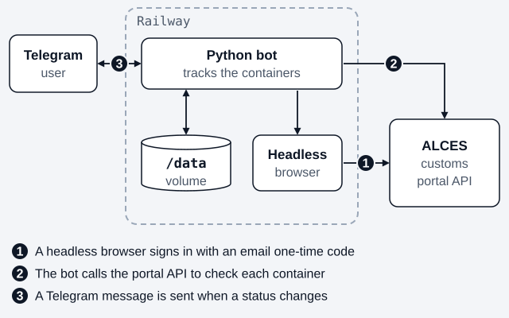

ALCES customs-tracking bot
A Telegram bot that follows shipping containers on ALCES, Algeria's customs portal.
Built for a friend's car-import business.
- Automated the login to the portal, including one-time codes sent by email.
- Used the portal's API to check the containers and send a Telegram message when a status changes.
- Deployed it on Railway, where it runs 24/7.
Private tool – demo on request